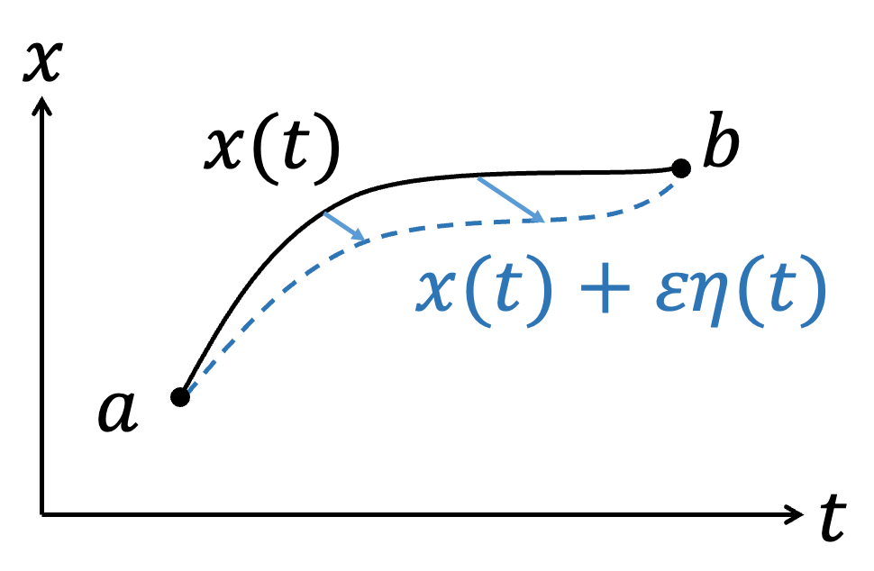
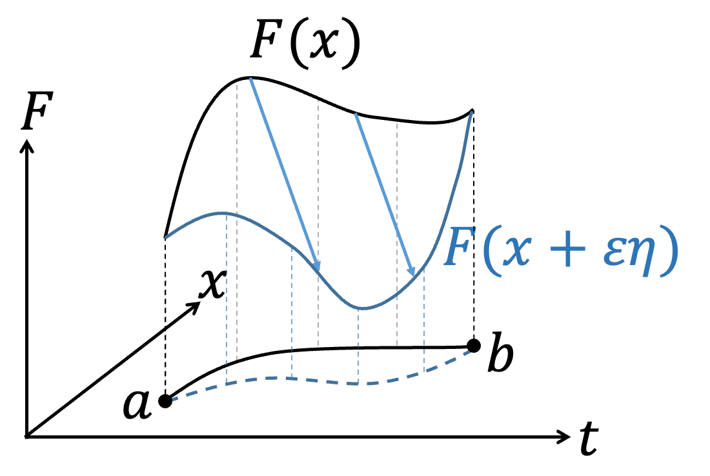
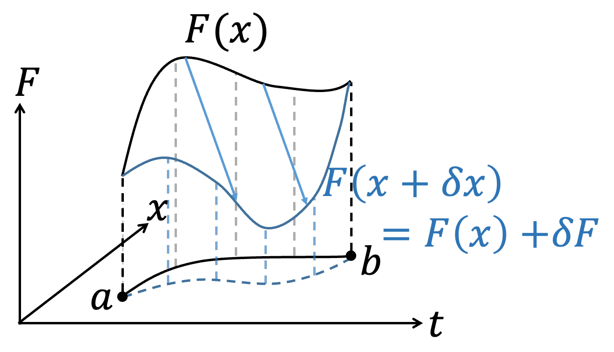

古典最小作用量原理
\(\to\)English Version
\(\to\)Lecture Note-Principle of Least Action(2019)
\(\to\)Lecture Note-Principle of Least Action(2018)
Update 2024.11.28：新增-一般教科書上守恆量的推導
Update 2024.11.18：新增-Ostrogradsky instability與高次微分
- 前言
- 初階變分法
- 簡化變分表示法
- Lagrangian的不唯一性
- Point Transformation、Form Invariant和Principle of Relativity
- 動量空間的Lagrangian
- 古典諾特定理
- 一般教科書上守恆量的推導
- Maximal Symmetry Action
- Ostrogradsky instability與高次微分
- 起始位置時間 \((q, t_i)\) 與終點位置時間 \((q_f, t_f)\)
- 起始位置時間 \((q_i, t_i)\) 與起始速度 \( \dot{q}_i \)
- 如果 \(L\) 依賴於 \(n\) 次導數，則 EoM 會變成 \(2n\) 次微分方程，起始條件會依賴到 \(2n-1\) 次微分，\(2n-1≥n\)，等號成立於\(n=1\)，故不讓起始條件超出原本\(L\)依賴的次數僅可能為\(1\)。
- 一旦 \(n > 1\)，Hamiltonian \(H\) 會出現奇次項，導致 \(H\) 沒有下限。
現代的物理學發展的框架下，喜歡從作用量Action S出發，當物理學家寫下Action後（根據實驗、物理現象和限制等等猜出），針對Action做變分\(\delta S\)（Variation）後，在最小作用量原理（Principle of least action）\(\delta S=0\)的要求下，就可以得到物理遵守的運動方程，後續就根據不同的物理系統求滿足運動方程的物理量變化。 古典力學的發展上，由d' Alembert利用虛功原理可以得到 $${d \over dt}{\partial L \over \partial \dot{x}_i}-{\partial L \over \partial x_i}=0$$ 後來Hamilton進一步闡明上述方程是滿足 $$\int_a^b L(x_1,...,x_n,\dot{x_1},...,\dot{x_n},t)dt$$ 利用變分法取極值\(\delta S=0\)的必然結果。 在物理學上，變分法通常用於新理論在初期發展時，由於物理學家還不知道正確的運動方程，故會根據實驗成果、物理經驗等去猜Action可能的形式，然後利用變分法得到描述Lagrangian滿足的運動方程，此後變分法便功成身退，後續的解題過程只要處理運動方程即可。例如 $$\int_a^b L(x,\dot{x},t)dt$$ 用變分後可以得到Euler-Lagrange equation $${d \over dt}{\partial L \over \partial \dot{x}}-{\partial L \over \partial x}=0$$ 後續理論力學課程只要會解Euler-Lagrange equation就好，所以整學年的課程變分法不常出現，於是應數相關的書籍對於變分法提及就不多。故在此簡單用不是數學上嚴謹的方式稍為介紹一下變分法。
如果今天，一個泛函（Functional）的積分問題
$$S[F(x,\dot{x},t)]=\int_a^b F(x,\dot{x},t)dt$$
其中，\(x=x(t)\)、\( \dot{x}={dx \over dt}\)，固定\(a\)、\(b\)下改變軌跡\(x(t)\)的形式會對積分S造成影響，我們想找到S的極值（Extreme value，不論極大或極小）下，軌跡\(x(t)\)會是什麼形式？或是\(F(x,\dot{x},t)\)該滿足什麼條件？根據微積分的概念，在\(f(x)\)極值\(x_0\)附近做微小的變化\(x_0 + \varepsilon\)時，\(f(x)\)是不會有變化的，即\(df=0\)。類似的想法，\(S\)在極值附近時，\(x(t)\)稍微改變形式，\(\delta S=0\)。我們可以將積分問題簡單的用圖像表達，不同\(x(t)\)的函數形式表示不同的路徑連結\(a\)到\(b\)點。
|  |  |
{kind=link}
{kind=link}
前一部分介紹了簡單的變分法概念，但是需要引入任意的函數\(\eta (t)\)，手法上稍嫌煩瑣，不利於後續操作。第二部分以相同的概念，採用比較抽象的想法但相同的數學手法，演示一次變分法的操作。有點像將變分的操作類同於微分操作。
|  |
{kind=link}
|
進階：Thm.1 :微分與變分對調 如果今天微分與變分針對的對象不同，如對\(t\)微分 \(d \over dt\)、對\(x\)變分\(\delta x\)，則 \(d \over dt\)與\(\delta \)可以對調。 $$\delta \dot{f}=\dot{f} (x+\delta x)-\dot{f}(x)$$ $$= {d \over dt} \left(f(x+\delta x)-f(x)\right)= {d \over dt} \delta f$$ |
$$\delta S=\int _a^b {\partial F\over\partial x} \delta xdt+ \int _a^b {\partial F\over \partial \dot{x} } \left( {d \over dt} \delta x\right)dt $$ 同樣的手法對第二項做分部積分 $$\int _a^b {\partial F\over \partial \dot{x} } \left( {d \over dt} \delta x\right)dt = \color{red}{{\partial F\over \partial \dot{x} } \delta x \Big|_a^b}-\int _a^b {d \over dt} {\partial F\over \partial \dot{x} } \delta xdt$$ 注意紅色這一項，因為我們要求變分\(\delta x\)滿足\(\delta x(a)=\delta x(b)=0\)，所以\( \color{red}{{\partial F\over \partial \dot{x} } \delta x\Big|_a^b=0}\) $$\delta S=\int _a^b {\partial F\over\partial x} \delta xdt-\int _a^b \left( {d \over dt} {\partial F\over \partial \dot{x} } \right)\delta xdt $$ $$=\int _a^b \left( {\partial F\over\partial x}- {d \over dt} {\partial F\over \partial \dot{x} } \right)\delta xdt=0$$ \(\delta x \) is arbitrary. $$ {\partial F\over\partial x}- {d \over dt} {\partial F\over \partial \dot{x} } =0$$ Euler-Lagrange equation
| 進階：Thm.2:變分的Chain rule $$\delta (FG)={\partial (FG)\over\partial x} \delta x+{\partial (FG)\over \partial \dot{x} } \delta \dot{x}$$ $$=\left( {\partial F\over\partial x} G+F {\partial G\over\partial x}\right)\delta x+\left( {\partial F\over \partial \dot{x} } G+F {\partial G\over\partial \dot{x}} \right)\delta \dot{x}$$ $$=\left( {\partial F\over\partial x} \delta x+ {\partial F\over \partial \dot{x} } \delta \dot{x} \right)G+F\left({\partial G\over\partial x} \delta x+{\partial G\over\partial \dot{x}} \delta \dot{x} \right)$$ $$= \delta F\cdot G+F\cdot \delta G$$ |
| 進階：Thm.3:針對函數F同乘同除另一函數G，不影響變分 $$\delta F=\delta \left(F\cdot {G\over G}\right)=\delta \left(F\cdot G\cdot G^{-1} \right)$$ $$=\delta F\cdot G\cdot G^{-1}+F\cdot \delta G\cdot G^{-1}+F\cdot G\cdot \delta (G^{-1} )$$ $$=\delta F+F\cdot \delta G\cdot G^{-1}+F\cdot G\cdot \left(-{\delta G\over G^2} \right)$$ $$=\delta F$$ |
理論力學的課程中，都有學過當\(Lagrangian\)添加一個函數\(f=f(q,t)\)時間的全微分項\({df\over dt}\)，\(L→L+{df\over dt}\)並不會改變EoM。這可以從兩個部分來看。第一種是最簡單的從變分的端點，
$$\delta S=\delta \int _a^b (L+{df\over dt})dt$$
$$=\delta \left[\int _a^b Ldt+\int _a^b {df\over dt} dt \right]$$
$$=\delta \left[\int _a^b Ldt+f(b)-f(a)\right]$$
$$=\delta \int _a^b Ldt+\delta f(b)-\delta f(a)$$
但因為端點不做變分，所以\(\delta f(b)=\delta f(a)=0\)，自然的
$$\delta \int _a^b \left(L+{df\over dt}\right)dt=\delta \int _a^b Ldt=0$$
另外一種是直接展開，觀察\(L+\dot{f}\) 是否滿足
\({d\over dt} {\partial \over\partial \dot{x}}\left( L+\dot{f} \right) -{\partial \over\partial x}\left( L+\dot{f} \right)=0\)
$${d\over dt} {\partial \over\partial \dot{x}}\left( L+\dot{f} \right) -{\partial \over\partial x}\left( L+\dot{f} \right)={d\over dt} {\partial L\over\partial \dot{x}} -{\partial L\over\partial x}+\color{red}{{d\over dt} {\partial \dot{f} \over\partial \dot{x}} -{\partial \dot{f} \over\partial x}}$$
紅色項我們可以觀察兩件事，因為\(f=f(x,t)\)
$$df={\partial f\over\partial x} dx+{\partial f\over\partial \dot{x}} d\dot{x} +{\partial f\over\partial t} dt$$
$$\to \dot{f} ={\partial \over\partial x} \dot{x} +{\partial f\over\partial \dot{x}} \ddot{x} +{\partial f\over\partial t}$$
所以
$${ \partial \dot{f} \over\partial \dot{x}} ={\partial f\over\partial x}\to dot\ cancellation$$
$${\partial \over\partial x} \dot{f}={\partial \over\partial x} \left({\partial \over\partial x} \dot{x} +{\partial f\over\partial \dot{x}} \ddot{x} +{\partial f\over\partial t}\right)$$
$$=\left({\partial \over\partial x} {\partial f\over\partial x}\right) \dot{x} +\left({\partial \over\partial x} {\partial f\over\partial \dot{x}} \right) \ddot{x} +\left({\partial \over\partial x} {\partial f\over\partial t}\right)$$
$$={d\over dt} \left({\partial f\over\partial x}\right)\to{d\over dt},{\partial \over\partial x} commute $$
會得到紅色項為零
$$\color{red}{{d\over dt} {\partial \dot{f} \over\partial \dot{x} }-{\partial \dot{f} \over\partial x}={d\over dt} {\partial f\over\partial x}-{d\over dt} {\partial f\over\partial x}=0}$$
故
$${d\over dt} {\partial \over\partial \dot{x}}\left( L+\dot{f} \right) -{\partial \over\partial x}\left( L+\dot{f} \right)={d\over dt} {\partial L\over\partial \dot{x}} -{\partial L\over\partial x}=0$$
添加\(\dot{f}\) 不會改變EoM。
在學物理的時候，最基本的物理法則就是相對性原理 (Principle of Relativity)。其中一種描述為：對所有慣性座標系而言 (本文至少目前不談論廣義相對論)，具有相同的物理定律。換句話說，就是所有慣性觀察者用的都是同一套物理、都具有一樣的物理方程式，也就是說「形式不變」(Form Invariant)。以牛頓力學來說，\(F=ma\) 換一個慣性座標還是\(\bar{F} = m\bar{a}\) 。我的老師，周定一老師，常常用很生動的比喻：如果今天物理定律不具有相對性原理，那無窮多個慣性座標就會有無窮多套物理定律，做出來的手機根本就不能用，因為搭上飛機就會換一套物理定律，地面做出來的裝置用的物理就在飛機上變得不適用。可以說相對性原理是研究物理學裡面一個最基本的假設。既然牛頓力學具有形式不變，那我們也要來討論 Euler-Lagrange equation 是否也在不同座標系下，也能「形式不變」。
在這邊我們先討論最基本的例子，稱為點變換 (Point Transformation)。假設今天在\(q\)慣性座標系研究出來的物理滿足：
$$L = L(\dot{q}, q, t)$$
$$\frac{d}{dt} \frac{\partial L}{\partial \dot{q}} - \frac{\partial L}{\partial q} = 0$$
有另外一位觀察者，他寫下的座標採用 \(s\) 座標系，兩者之間有一個可逆的函數關係：
$$s = s(q, t) \leftrightarrow q = q(s, t)$$
$$dq = \frac{\partial q}{\partial s} ds + \frac{\partial q}{\partial t} dt$$
$$\rightarrow \dot{q} = \frac{\partial q}{\partial s} \dot{s} + \frac{\partial q}{\partial t}$$
$$\rightarrow d\dot{q} = d\left(\frac{\partial q}{\partial s}\right) \dot{s} + \left(\frac{\partial q}{\partial s}\right)d\dot{s} + d\left(\frac{\partial q}{\partial t}\right)$$
$$=\left(\frac{\partial q}{\partial s}\right) d\dot{s} + \dot{s}\left(\frac{\partial^2 q}{\partial s^2} ds + \frac{\partial^2 q}{\partial t \partial s} dt\right) + \left(\frac{\partial^2 q}{\partial s \partial t} ds + \frac{\partial^2 q}{\partial t^2} dt\right)$$
$$=\frac{\partial q}{\partial s} d\dot{s} + \left[\dot{s} \frac{\partial^2 q}{\partial s^2} + \frac{\partial^2 q}{\partial s \partial t}\right]ds + \left[\frac{\partial^2 q}{\partial t \partial s} + \frac{\partial^2 q}{\partial t^2}\right]dt$$
$$\equiv \frac{\partial \dot{q}}{\partial \dot{s}} d\dot{s} + \frac{\partial \dot{q}}{\partial s} ds + \frac{\partial \dot{q}}{\partial t} dt$$
$$\rightarrow \dot{q} = \dot{q}(\dot{s}, s, t)$$
首先先看一下 Lagrangian \(L\)：
$$dL = \frac{\partial L}{\partial \dot{q}} d\dot{q} + \frac{\partial L}{\partial q} dq + \frac{\partial L}{\partial t} dt$$
$$=\frac{\partial L}{\partial \dot{q}} \left(\frac{\partial \dot{q}}{\partial \dot{s}} d\dot{s} + \frac{\partial \dot{q}}{\partial s} ds + \frac{\partial \dot{q}}{\partial t} dt\right) + \frac{\partial L}{\partial q} \left(\frac{\partial q}{\partial s} ds + \frac{\partial q}{\partial t} dt\right) + \frac{\partial L}{\partial t} dt$$
$$=\left(\frac{\partial L}{\partial \dot{q}} \frac{\partial \dot{q}}{\partial \dot{s}} d\dot{s} + \frac{\partial L}{\partial \dot{q}} \frac{\partial \dot{q}}{\partial s} ds + \frac{\partial L}{\partial \dot{q}} \frac{\partial \dot{q}}{\partial t} dt\right) + \left(\frac{\partial L}{\partial q} \frac{\partial q}{\partial s} ds + \frac{\partial L}{\partial q} \frac{\partial q}{\partial t} dt\right) + \frac{\partial L}{\partial t} dt$$
$$=\frac{\partial L}{\partial \dot{q}} \frac{\partial \dot{q}}{\partial \dot{s}} d\dot{s} + \left(\frac{\partial L}{\partial \dot{q}} \frac{\partial \dot{q}}{\partial s} + \frac{\partial L}{\partial q} \frac{\partial q}{\partial s}\right)ds + \left(\frac{\partial L}{\partial \dot{q}} \frac{\partial \dot{q}}{\partial t} + \frac{\partial L}{\partial q} \frac{\partial q}{\partial t}\right)dt + \frac{\partial L}{\partial t} dt$$
$$\equiv \frac{\partial L}{\partial \dot{s}} d\dot{s} + \frac{\partial L}{\partial s} ds + \frac{\partial L}{\partial t} dt$$
$$\rightarrow L = L(\dot{s}, s, t)$$
確認在 Point Transformation 之後，Lagrangian \(L\) 在 \(s\) 座標下仍然只是 \(\dot{s}, s, t\)的函數。在此我們可以直接套用變分流程，就說明 Lagrangian \(L(\dot{s}, s, t)\) 滿足：
$$\frac{d}{dt} \frac{\partial L}{\partial \dot{s}} - \frac{\partial L}{\partial s} = 0$$
當然，也可以採用數學直接計算。從原本的 Euler-Lagrange equation 出發：
$$\frac{d}{dt} \frac{\partial L}{\partial \dot{q}} - \frac{\partial L}{\partial q} = 0 \rightarrow \frac{d}{dt} \left(\frac{\partial L}{\partial \dot{s}} \color{red}{\frac{\partial \dot{s}}{\partial \dot{q}}}\right) - \left(\frac{\partial L}{\partial \dot{s}} \frac{\partial \dot{s}}{\partial q} + \frac{\partial L}{\partial s} \frac{\partial s}{\partial q}\right) = 0$$
紅色利用 dot cancellation \(\color{red}{\frac{\partial \dot{s}}{\partial \dot{q}} = \frac{\partial s}{\partial q}}\)：
$$\rightarrow \frac{d}{dt} \left(\frac{\partial L}{\partial \dot{s}} \color{red}{\frac{\partial s}{\partial q}}\right) - \left(\frac{\partial L}{\partial \dot{s}} \frac{\partial \dot{s}}{\partial q} + \frac{\partial L}{\partial s} \frac{\partial s}{\partial q}\right) = 0$$
$$\rightarrow \frac{d}{dt} \left(\frac{\partial L}{\partial \dot{s}}\right) \frac{\partial s}{\partial q} + \frac{\partial L}{\partial \dot{s}} \frac{\partial \dot{s}}{\partial q} - \frac{\partial L}{\partial \dot{s}} \frac{\partial \dot{s}}{\partial q} - \frac{\partial L}{\partial s} \frac{\partial s}{\partial q} = 0$$
因為 \(\frac{d}{dt} \left(\frac{\partial s}{\partial q}\right) = \frac{\partial \dot{s}}{\partial q}\) (only if \(s = s(q, t)\))：
$$\rightarrow \frac{d}{dt} \left(\frac{\partial L}{\partial \dot{s}}\right) \frac{\partial s}{\partial q} + \frac{\partial L}{\partial \dot{s}} \frac{\partial \dot{s}}{\partial q} - \frac{\partial L}{\partial \dot{s}} \frac{\partial \dot{s}}{\partial q} - \frac{\partial L}{\partial s} \frac{\partial s}{\partial q} = 0$$
$$\rightarrow \left[\frac{d}{dt} \left(\frac{\partial L}{\partial \dot{s}}\right) - \frac{\partial L}{\partial s}\right] \frac{\partial s}{\partial q} = 0$$
因為 \(\frac{\partial s}{\partial q}\) 可逆且任意，所以：
$$\frac{d}{dt} \left(\frac{\partial L}{\partial \dot{s}}\right) - \frac{\partial L}{\partial s} = 0$$
在 \(s\) 座標下仍然滿足 Euler-Lagrange equation。在這邊可以注意到，\(s = s(q, t)\) 其實不一定是慣性座標，但仍然滿足 Euler-Lagrange equation，可見 Euler-Lagrange equation 強大的地方。
Lagrangian equation不只可以在\((q,\dot{q} ,t)\)中描述，也可以在動量空間\((p,\dot{p} ,t)\)中描述，轉換如下： $$ p={\partial L \over \partial \dot{q}} $$ $$\dot{p} ={d\over dt} {\partial L\over\partial \dot{q}}={\partial L\over\partial q}$$ \(p\)為廣義動量。利用\(L=L(q,\dot{q} ,t)\)， $$dL=\dot{p} dq+pd\dot{q} +{\partial L\over\partial t} dt$$ $$=d(\dot{p} q)-qd\dot{p} +d(p\dot{q} )-\dot{q} dp+{\partial L\over\partial t} dt$$ $$=\color{red}{d(\dot{p} q+p\dot{q} )}-qd\dot{p} -\dot{q} dp+{\partial L\over\partial t} dt$$ 紅色項移項 $$d \left(L\color{red}{-\dot{p} q-p\dot{q}} \right)=-qd\dot{p} -\dot{q} dp+{\partial L\over\partial t} dt$$ 定義新的Lagrangian \(\bar{L}\) $$\bar{L} \equiv L-\dot{p} q-p\dot{q} =L-{d\over dt} (pq)$$ 得到\(d\bar{L}\) $$ d\bar{L}=-qd\dot{p} -\dot{q} dp+{\partial L\over\partial t} dt$$ 比較左右兩邊可以得到 $${\partial \bar{L}\over\partial \dot{p} }=-q$$ $${\partial \bar{L}\over\partial p}=-\dot{q}$$ $$\to {d\over dt} {\partial \bar{L}\over\partial \dot{p}}={\partial \bar{L}\over\partial p}$$ 為動量空間的EoM。可以注意到形式不變(Form invariant)。
古典諾特定理
諾特定理作為古典力學重要的定理，也是Lagrangian、Hamiltonian超越牛頓力學的重要原因。諾特定理的表述為，當系統滿足EoM、或最小作用量原理之下，我們若給予Action S一個變化\(\delta \alpha\)卻可以保持\(\delta S=0\)，諾特定理表明會對應到一個守恆量。在這邊我們討論同時對時間\(t\)跟物理軌跡\(q\)做變分
$$q \to \bar{q} = q+\delta q$$
$$t \to \bar{t} =t+\delta t$$
但值得注意的是，軌跡\(q\)作為時間\(t\)的函數，會受到自身變分的影響之外，也會受到時間改變的有影響，定義\(\Delta q\)表示完整影響
$$\Delta q\equiv \bar{q} (\bar{t} )-q(t)$$
$$=\bar{q} (\bar{t} )-q(\bar{t} )+-q(\bar{t} )-q(t)$$
$$=\delta q+\dot{q} \delta t$$
考慮變分前後的差別
$$\delta S=\delta \int L dt=\int \delta L dt+\int L d\delta t$$
第一項仔細寫下為
$$\delta L=L \left(\bar{q} (\bar{t} ),\dot{\bar{q}}(\bar{t} ),\bar{t} \right)-L\left(q(t),\dot{q} (t),t\right)$$
$$=L \left(\bar{q} (\bar{t} ),\dot{\bar{q}}(\bar{t} ),\bar{t} \right)-L\left(q(\bar{t} ),\dot{q} (\bar{t} ),\bar{t} \right)+L\left(q(\bar{t} ),\dot{q} (\bar{t} ),\bar{t} \right)-L\left(q(t),\dot{q} (t),t\right)$$
$$={\partial L\over\partial q} \delta q+{\partial L\over \partial \dot{q} } \delta \dot{q} +{dL\over dt} \delta t$$
$$={\partial L\over\partial q} \delta q-\left({d\over dt} {\partial L\over \partial \dot{q} }\right) \delta q+{d\over dt} \left({\partial L\over \partial \dot{q} } \delta q\right)+{dL\over dt} \delta t$$
$$=\left[{\partial L\over\partial q} -{d\over dt} {\partial L\over \partial \dot{q} } \right]\delta q+{d\over dt} \left({\partial L\over \partial \dot{q} } \delta q\right)+{dL\over dt} \delta t$$
因為Lagrangian滿足EoM
$${\partial L\over\partial q} -{d\over dt} {\partial L\over \partial \dot{q} } =0 $$
所以第一項只剩下
$$\delta L={d\over dt} \left({\partial L\over \partial \dot{q} } \delta q\right)+{dL\over dt} \delta t$$
第二項單純改寫
$$\int L d\delta t=\int L {d\delta t\over dt} dt$$
將兩項合併
$$\delta S=\int \left[{d\over dt} \left({\partial L\over \partial \dot{q} } \delta q\right)+{dL\over dt} \delta t\right] dt+\int {L d\delta t\over dt} dt$$
$$=\int {d\over dt} \left[{\partial L\over \partial \dot{q} } \delta q+L\delta t\right] dt$$
但因為\(\delta q\)只是軌跡自身的變分，必須考慮到完整的變化\(\Delta q\)，利用
$$\delta q=\Delta q-\dot{q} \delta t$$
代入
$$\delta S=\int {d\over dt} \left[{\partial L\over \partial \dot{q} } \left(\Delta q-\delta t \right)+L\delta t\right] dt$$
$$=\int {d\over dt} \left[{\partial L\over \partial \dot{q} } \Delta q-\left({\partial L\over \partial \dot{q} } \dot{q} -L\right)\delta t\right] dt$$
如果經過變分後不變，即\(\delta S=0\)，代表
$$ {d\over dt} \left[{\partial L\over \partial \dot{q} } \Delta q\right]=0 \to {\partial L\over \partial \dot{q} } \Delta q =const.$$
$$ {d\over dt} \left[ \left({\partial L\over \partial \dot{q} } \dot{q} -L\right)\delta t\right]=0 \to \left({\partial L\over \partial \dot{q} } \dot{q} -L\right)\delta t = const.$$
對應軌跡q變分不變的守恆量為
$${\partial L\over \partial \dot{q} } =p$$
，為動量守恆。
對應時間t變分不變的守恆量為
$$H={\partial L\over \partial \dot{q} } \dot{q} -L$$
為能量守恆。
動量守恆
對於動量守恆，我們可以直接從 EoM 出發： \[ \frac{\partial L}{\partial q} - \frac{d}{dt} \frac{\partial L}{\partial \dot{q}} = 0 \implies \frac{d}{dt} \frac{\partial L}{\partial \dot{q}} = \frac{\partial L}{\partial q}。 \] 如果 \(L\) 不是軌跡 \(q\) 的顯函數，則 \(\frac{\partial L}{\partial q} = 0\)，從而： \[ \frac{d}{dt} \frac{\partial L}{\partial \dot{q}} = 0 \] 這意味著動量： \[ p = \frac{\partial L}{\partial \dot{q}} = constant \] \(\frac{\partial L}{\partial q} = 0\) 的另一個含義是，當 \(q \to q + \delta q\)（但不改變 \(\dot{q}\) 時），有： \[ \delta L = \frac{\partial L}{\partial q} \delta q = 0 \]
能量守恆與 Hamiltonian
再來，我們討論 Hamiltonian \(H\)： \[ \frac{dL}{dt} = \frac{\partial L}{\partial \dot{q}} \frac{d\dot{q}}{dt} + \frac{\partial L}{\partial q} \frac{dq}{dt} + \frac{\partial L}{\partial t} \] 移項並整理後，可以得到： \[ \frac{\partial L}{\partial t} = \frac{dL}{dt} - \frac{\partial L}{\partial \dot{q}} \frac{d\dot{q}}{dt} - \frac{\partial L}{\partial q} \dot{q} \] \[ = \frac{dL}{dt} - \frac{d}{dt} \left( \frac{\partial L}{\partial \dot{q}} \dot{q} \right) + \frac{d}{dt} \left( \frac{\partial L}{\partial \dot{q}} \right) \dot{q} - \frac{\partial L}{\partial q} \dot{q} \] \[ = -\frac{d}{dt} \left( \frac{\partial L}{\partial \dot{q}} \dot{q} - L \right) + \left( \frac{d}{dt} \frac{\partial L}{\partial \dot{q}} - \frac{\partial L}{\partial q} \right) \dot{q} \] 第二項即是 \(EoM = 0\)，所以： \[ \frac{\partial L}{\partial t} = -\frac{d}{dt} \left( \frac{\partial L}{\partial \dot{q}} \dot{q} - L \right) \] 如果 \(L\) 不是時間 \(t\) 的顯函數，則 \(\frac{\partial L}{\partial t} = 0\)，從而： \[ \frac{d}{dt} \left( \frac{\partial L}{\partial \dot{q}} \dot{q} - L \right) = 0 \] 能量： \[ E = \frac{\partial L}{\partial \dot{q}} \dot{q} - L = constant \] \(\frac{\partial L}{\partial t} = 0\) 的另一個含義是，當 \(t \to t + \delta t\)（但不改變 \(q, \dot{q}\) 時），有： \[ \delta L = \frac{\partial L}{\partial t} \delta t = 0 \]
全域與局域變換
在前一節中，我們討論了作用量 \(S\) 的對稱性，即 \(\delta S = 0\)。而在這一節中，我們討論的是 \(L\) 不為於 \(q\) 或 \(t\)的顯函數，即 \(\delta L = 0\)。兩者的差別體現在： \[ \delta S = \delta \left( \int L \, dt \right) = \int \delta L \, dt + \int L \delta dt， \] 第二項產生了差異。由之前的推導： \[ \int L \delta dt = \int L \frac{d \delta t}{dt} dt \] 若 \(\frac{d \delta t}{dt} = 0\)，則 \(\delta L = 0 \iff \delta S = 0\) 更仔細地比較如下表：
| \[\delta L = 0\] | \[\delta S = 0\] |
| \[\frac{\partial L}{\partial q} = \frac{d}{dt} \frac{\partial L}{\partial \dot{q}} = 0\] | \[\frac{d}{dt} \left( \frac{\partial L}{\partial \dot{q}} \Delta q \right) = 0\] |
| \[ \frac{\partial L}{\partial t} = -\frac{d}{dt} \left( \frac{\partial L}{\partial \dot{q}} \dot{q} - L \right)=0 \] | \[\frac{d}{dt} \left[ \left( \frac{\partial L}{\partial \dot{q}} \dot{q} - L \right) \delta t \right] = 0\] |
當 \(\Delta q\) 的變分不是時間的函數（即 \(\frac{d}{dt} \Delta q = 0\)），則 \(\delta L = 0\) 與 \(\delta S = 0\) 的結果相同。同樣，當 \(\frac{d}{dt} \delta t = 0\) 時，兩者的守恆量相等。
這引入了全域變換（Global Transformation）與局域變換（Local Transformation）的概念。全域變換是指變分量與時間無關，即各時間點上的變化量固定。局域變換則允許變分量是時間的函數，表示各時間點上的變化量有更高自由度。顯然，全域變換是局域變換的一個特例。討論 \(\delta L = 0\) 能迅速得到全域變換的守恆量，而局域變換則會引出新的方向，例如規範理論（Gauge Theory），未來會有機會撰文討論。
本節為筆者推論，還不確定是否正確
前面提到Lagrangian L的不唯一性，我們可以添加全微分項\(\dot{f}\) 而不改變EoM。以下來討論添加\(\dot{f}\) 對諾特定理的影響。我們只需先將\(L\to\bar{L} =L+\dot{f} \)改寫結論即可
$$\delta S=\int {d\over dt} \left[{\partial \bar{L} \over \partial \dot{q} } \Delta q-\left({\partial \bar{L} \over \partial \dot{q} } \dot{q} -\bar{L} \right)\delta t\right] dt$$
$$=\int {d\over dt} \left[\left({\partial L\over \partial \dot{q} } +{\partial \dot{f} \over \partial \dot{q} } \right)\Delta q-\left(\left({\partial L\over \partial \dot{q} } +{\partial \dot{f} \over \partial \dot{q} } \right) \dot{q} -L-\dot{f} \right)\delta t\right] dt$$
注意\(f=f(q,t)\)，適用dot cancellation，\({\partial \dot{f} \over \partial \dot{q} } ={\partial f\over\partial q}\)，另外代入\( p={\partial L\over \partial \dot{q}}\)，所以
$$\delta S=\int {d\over dt} \left[\left({\partial L\over \partial \dot{q} } +{\partial f\over\partial q}\right)\Delta q-\left(\left(p +{\partial f\over\partial q}\right) \dot{q} -L-\dot{f} \right)\delta t\right] dt$$
$$=\int {d\over dt} \left[\left({\partial L\over \partial \dot{q} } +{\partial f\over\partial q}\right)\Delta q-\left(p\dot{q} +{\partial f\over\partial q}\dot{q} -L-\dot{f} \right)\delta t\right] dt$$
$$=\int {d\over dt} \left[\left({\partial L\over \partial \dot{q} } +{\partial f\over\partial q}\right)\Delta q-\left(H -{\partial f\over\partial t} \right)\delta t\right] dt$$
如果當原本的Lagrangian \(L\)不具備對稱性，我們有機會透過\({\partial f \over \partial q}\)做修正，因為\(f=f(q,t)\)所以\({\partial f\over\partial q}={\partial \over\partial q}f(q,t)\)，只要\({\partial L\over \partial \dot{q} }\) 不是\(\dot{q}\) 的函數，我們可以用\({\partial f\over\partial q}=-{\partial L\over \partial \dot{q} } +const\)消除微分不為零的部分，使得\(\delta S=0\)，對應軌跡\(q\)變分不變的守恆量為
$${\partial L\over \partial \dot{q} } +{\partial f\over\partial q}=\bar{p}$$
，我們可以稱作此Lagrangian \(\bar{L}= L+\dot{f}\) 對應的Action \(\bar{S}\)為Maximal Symmetry Action。
傳統上，我們可以透過許多方式，判斷 EoM 最多是二次微分方程式。例如邊界條件，在牛頓力學中只需要知道以下其中一個資訊：
傳統 Lagrangian 的 Hamiltonian
我們先回到傳統 Lagrangian \(L(\dot{q}, q, t)\) 對應的 Hamiltonian： \[ H = \frac{\partial L}{\partial \dot{q}} \dot{q} - L \] 我們從朗道（Landau）的論證中，因為我們相信空間的均向性（isotropic, or homogenous in space and time）與座標獨立性（frame independent，即相對性原理 Principle of relativity，物理不與座標選取、正負號選取有關），Lagrangian \(L\) 只會是 \(\dot{q}^{2n}\) 和 \(q^{2n}\)，都是偶數次方，且 \(L\) 必須是純量。 更仔細地說，因為 \(\overrightarrow{\dot{q}}\)、\(\overrightarrow{q}\) 是向量，為了滿足上述需求，\(\overrightarrow{\dot{q}} \to \overrightarrow{\dot{q}} \cdot \overrightarrow{\dot{q}} = |\dot{q}|^2\)、\(\overrightarrow{q} \to \overrightarrow{q} \cdot \overrightarrow{q} = |q|^2\)，只與物理量的大小、不與方向有關，為偶數次方。 最簡單的簡諧震盪： \[ L = \frac{m}{2} \dot{q}^2 - \frac{k}{2} q^2 \implies H = \frac{\partial L}{\partial \dot{q}} \dot{q} - L = \frac{m}{2} \dot{q}^2 + \frac{k}{2} q^2 \] 可以注意到 \(\frac{\partial L}{\partial \dot{q}} \dot{q} = m \dot{q}^2 \) 依舊維持偶數次方，能量 \(E\) 有下限。當 \(L\) 包含二次導數
如果我們允許 Lagrangian \(L\) 包含二次導數，即 \(L = L(\ddot{q}, \dot{q}, q, t)\)，首先可以用變分原理推導出 EoM： \[ \delta L = \frac{\partial L}{\partial \ddot{q}} \delta \ddot{q} + \frac{\partial L}{\partial \dot{q}} \delta \dot{q} + \frac{\partial L}{\partial q} \delta q \] \[ = \frac{\partial L}{\partial \ddot{q}} \frac{d}{dt} \delta \dot{q} + \frac{\partial L}{\partial \dot{q}} \frac{d}{dt} \delta q + \frac{\partial L}{\partial q} \delta q \] \[ = \frac{d}{dt} \left(\frac{\partial L}{\partial \ddot{q}} \delta \dot{q}\right) - \frac{d}{dt} \left(\frac{\partial L}{\partial \ddot{q}}\right) \delta \dot{q} + \frac{d}{dt} \left(\frac{\partial L}{\partial \dot{q}} \delta q\right) - \frac{d}{dt} \left(\frac{\partial L}{\partial \dot{q}}\right) \delta q + \frac{\partial L}{\partial q} \delta q \] \[ = \frac{d}{dt} \left(\frac{\partial L}{\partial \ddot{q}} \delta \dot{q} + \frac{\partial L}{\partial \dot{q}} \delta q\right) - \frac{d}{dt} \left[\frac{d}{dt} \left(\frac{\partial L}{\partial \ddot{q}}\right) \delta q\right] + \frac{d^2}{dt^2} \left(\frac{\partial L}{\partial \ddot{q}}\right) \delta q + \left(\frac{\partial L}{\partial q} - \frac{d}{dt} \frac{\partial L}{\partial \dot{q}}\right) \delta q \] \[ = \frac{d}{dt} \left[\frac{\partial L}{\partial \ddot{q}} \delta \dot{q} + \left(\frac{\partial L}{\partial \dot{q}} - \frac{d}{dt} \frac{\partial L}{\partial \ddot{q}}\right) \delta q\right] + \left(\frac{\partial L}{\partial q} - \frac{d}{dt} \frac{\partial L}{\partial \dot{q}} + \frac{d^2}{dt^2} \frac{\partial L}{\partial \ddot{q}}\right) \delta q \] 第一項是邊界項，第二項即是EoM: \[ \frac{d^2}{dt^2} \frac{\partial L}{\partial \ddot{q}} - \frac{d}{dt} \frac{\partial L}{\partial \dot{q}} + \frac{\partial L}{\partial q} = 0 \] EoM 因為 \(\frac{d^2}{dt^2} \frac{\partial L}{\partial \ddot{q}}\)，這導致 EoM 成為四次微分方程，微分方程需要依賴起始位置 \(q(0)\)、起始速度 \(\dot{q}(0)\)、起始加速度 \(\ddot{q}(0)\) 外，還需要起始急跳度 \(\dddot{q}(0)\)！ 即便 \(L\) 多考慮二次導數，EoM 卻需要考慮到三次微分，這顯得不合理。Hamiltonian 的影響
從 Lagrangian \(L\) 開始，我們考慮以下公式： \[ \frac{dL}{dt} = \frac{\partial L}{\partial \ddot{q}} \frac{d\ddot{q}}{dt} + \frac{\partial L}{\partial \dot{q}} \frac{d\dot{q}}{dt} + \frac{\partial L}{\partial q} \frac{dq}{dt} + \frac{\partial L}{\partial t} \] 移項並整理後，可以得到： \[ \frac{\partial L}{\partial t} = \frac{dL}{dt} - \frac{\partial L}{\partial \ddot{q}} \frac{d\ddot{q}}{dt} - \frac{\partial L}{\partial \dot{q}} \frac{d\dot{q}}{dt} - \frac{\partial L}{\partial q} \dot{q} \] \[ = \frac{dL}{dt} - \frac{d}{dt} \left( \frac{\partial L}{\partial \ddot{q}} \ddot{q} \right) + \frac{d}{dt} \left( \frac{\partial L}{\partial \ddot{q}} \right) \ddot{q} - \frac{d}{dt} \left( \frac{\partial L}{\partial \dot{q}} \dot{q} \right) + \frac{d}{dt} \left( \frac{\partial L}{\partial \dot{q}} \right) \dot{q} - \frac{\partial L}{\partial q} \dot{q} \] \[ = \frac{dL}{dt} - \frac{d}{dt} \left( \frac{\partial L}{\partial \ddot{q}} \ddot{q} \right) + \frac{d}{dt} \left[ \frac{d}{dt} \left( \frac{\partial L}{\partial \ddot{q}} \right) \dot{q} \right] - \frac{d^2}{dt^2} \left( \frac{\partial L}{\partial \ddot{q}} \right) \dot{q} - \frac{d}{dt} \left( \frac{\partial L}{\partial \dot{q}} \dot{q} \right) + \frac{d}{dt} \left( \frac{\partial L}{\partial \dot{q}} \right) \dot{q} - \frac{\partial L}{\partial q} \dot{q} \] \[ = \frac{d}{dt} \left[ L - \frac{\partial L}{\partial \ddot{q}} \ddot{q} + \left( \frac{d}{dt} \frac{\partial L}{\partial \ddot{q}} - \frac{\partial L}{\partial \dot{q}} \right) \dot{q} \right] - \left( \frac{d^2}{dt^2} \frac{\partial L}{\partial \ddot{q}} - \frac{d}{dt} \frac{\partial L}{\partial \dot{q}} + \frac{\partial L}{\partial q} \right) \dot{q} \] 第二項即為 EoM = 0，而第一項為 Hamiltonian： \[ H = \frac{\partial L}{\partial \ddot{q}} \ddot{q} + \left( \frac{\partial L}{\partial \dot{q}} - \frac{d}{dt} \frac{\partial L}{\partial \ddot{q}} \right) \dot{q} - L \] 。在前面討論中，因為均向性和相對性原理的要求，我們可以推論 \(\ddot{q}\)、\(\dot{q}\)、\(q\) 在 Lagrangian \(L\) 中都是偶數次方，所以 \[ \frac{\partial L}{\partial \ddot{q}} \ddot{q}, \quad \frac{\partial L}{\partial \dot{q}} \dot{q} \] 依然為偶數次，並且恆正。然而 \[ \left( \frac{d}{dt} \frac{\partial L}{\partial \ddot{q}} \right) \dot{q} \] 會導致 \(\ddot{q}\) 與 \(\dot{q}\) 形成奇數次，從而允許 Hamiltonian \(H\) 沒有下限。此即為 Ostrogradsky 不穩定性。
更一般的情況如果讀者有興趣，可以考慮 \(L = L\left(\frac{d^n q}{dt^n}, \dots, \frac{dq}{dt}, q, t\right)\)，對應的 EoM 和 Hamiltonian 為： \[ \sum_{i=0}^n (-1)^i \frac{d^i}{dt^i} \left[ \frac{\partial L}{\partial \left(\frac{d^i q}{dt^i}\right)} \right] = 0 \] \[ H = \sum_{i=1}^n \sum_{j=1}^i (-1)^{i-j} \left[ \frac{d^{i-j}}{dt^{i-j}} \frac{\partial L}{\partial \left(\frac{d^i q}{dt^i}\right)} \right] \frac{d^j q}{dt^j} - L \] 可以注意幾點： |
後記
感謝兩位在清華的恩師：吳國安教授 和 周定一教授。國安教授教導我大學部的理論力學、周教授教導我古典力學和廣義相對論。他們的教學熱情和用心讓我可以欣賞到古典物理之美=)
Index
About me
Contact:
{kind=link}